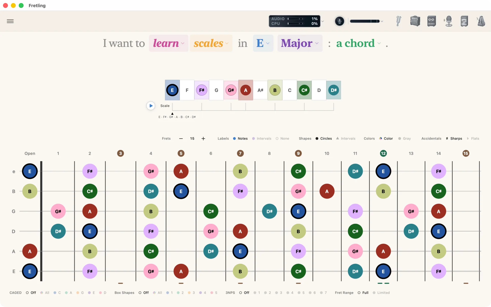
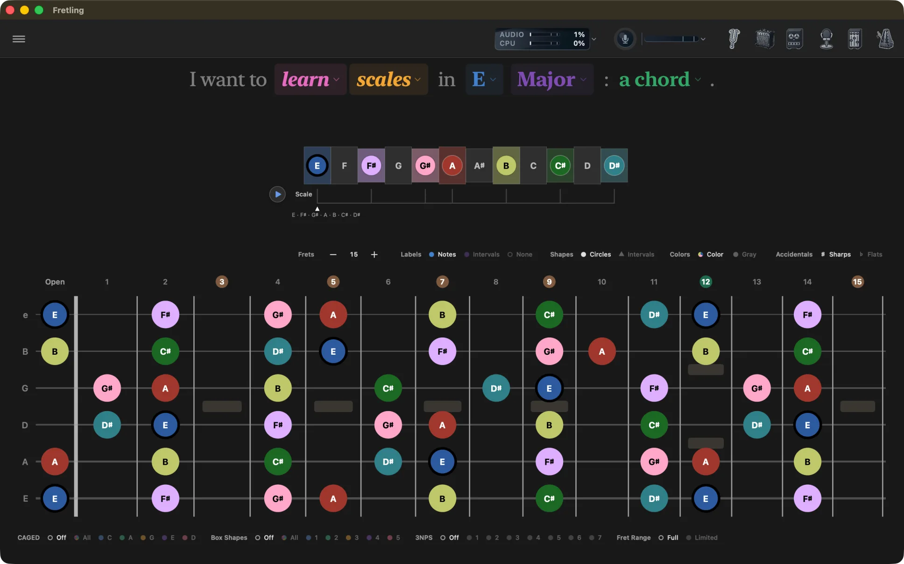
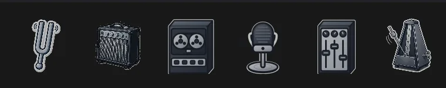

What it does
- Learn scales, diatonic chords, and triads in any key, with CAGED, pentatonic, and three-notes-per-string overlays.
- Identify a chord by tapping notes onto the neck, or by playing it into the mic — Fretling ranks the readings.
- Hear anything you see: tap-to-play notes, one-tap scale and chord playback, six instrument voices.
- Practice with a chromatic tuner, a metronome with a step-sequenced drum machine, and (on Mac) a Neural Amp Modeler amp and a looper.
The rest of the guide
Anatomy of the screen
Everything sits around one stable fretboard. A fixed bar of app controls runs across the top, two chip bars bracket the neck, and the practice tools open as floating panels that you can drag out of the way.
| Where | What sits there |
|---|---|
| The top bar | One band across the top of the canvas. The Settings button sits at the leading end and slides the sidebar in; the six practice tool icons — tuner, amp, looper, Live Detect, mixer, metronome — sit at the trailing end. See Practice Tools. |
| Above the neck | The sentence you build, an optional scale timeline, then the marker display bar — Labels, Shapes, Colors, Accidentals. |
| The neck | Six strings, fifteen frets, every scale or chord tone drawn as a marker. Tap one to hear it. |
| Below the neck | Visual Groupings: CAGED, chord shapes, three-notes-per-string, and string sets in Triads. |



Quick start
- Read the sentence at the top and tap any colored word to change it: the verb (learn or identify), the mode (scales, chords, triads), the root note, and the scale type.
- Tap notes on the neck to hear them. The instrument comes from Settings → Audio.
- Use the Labels / Shapes / Colors / Accidentals chips above the neck to switch between note names and interval numbers.
- Use the Visual Groupings chips below the neck to lay CAGED shapes, pentatonic boxes, chord shapes, or 3NPS patterns over what you are seeing.
- Open the tools you need from the icon row at the right of the top bar — they float over the fretboard and can be dragged out of the way.
Platforms and requirements
| Platform | Requirement | Notes |
|---|---|---|
| Mac | macOS 15.4 or later | Full feature set, including the guitar amp and looper. Minimum window 1000 × 760. |
| iPad | iPadOS 18.6 or later | Landscape, full screen. The amp and looper are Mac-only. |
| iPhone | Not supported | The layout is built around a wide neck; an iPhone version is planned but not shipped. |
Fretling runs entirely on your device — no account, no analytics, no cloud sync. See the privacy policy.